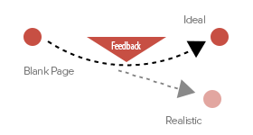
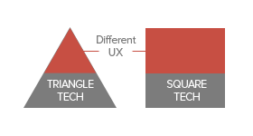
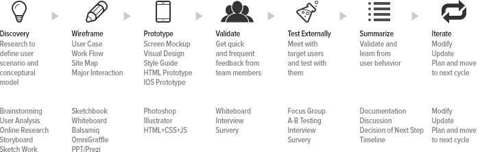
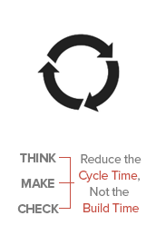

MY DESIGN PHILOSOPHY
KEEP IT CLEAN & SIMPLE
USER FEEDBACK IS THE KEY
IT KEEPS YOU ON TRACK

FOLLOW NEW TECHNOLOGIES
THEY MAY CHANGE THE RULE

MY UX DESIGN PROCESS
HOW DO I DESIGN FOR GREAT UX?

REDUCE INVENTORY
MOVE EFFICIENTLY

THANKS TO JEFF GOTHELF
Jeff's Lean UX is a proven approach for different environment. My UX porcess is 7 steps – discovery, Wireframe, prototype, validate internally, test externally, summarize, iterate. It is based on the Lean UX concept.